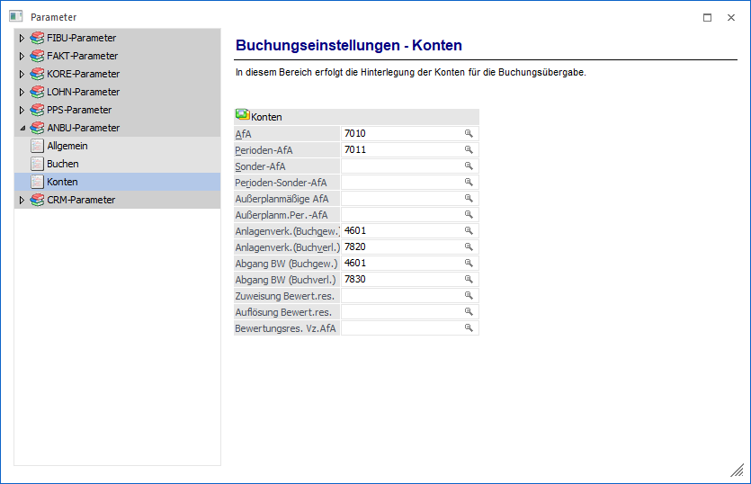
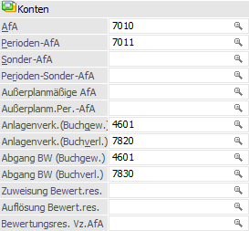

Über den Bereich "ANBU-Parameter - Konten" können die Konten für die Buchungsübergabe hinterlegt werden.
Hinweis
Standardmäßig wird das Fenster in einem "Lesemodus" geöffnet, d.h. es können die bestehenden Einstellungen kontrolliert, Änderungen allerdings nicht durchgeführt werden. Hierfür muss zunächst mit Hilfe des Buttons "Bearbeiten" der "Bearbeitungsmodus" aktiviert werden. Alternativ kann diese Aktivierung auch über das Kontextmenü der rechten Maustaste (Funktion "Applikation xxx bearbeiten") erfolgen.

Allgemeiner Hinweis zu den Abschreibungskonten
Wir empfehlen Ihnen, alle Abschreibungskonten als Default-Konten in den Anlagenparametern zu hinterlegen. Sollten Sie im Anlagenstamm irrtümlich kein Abschreibungskonto eintragen, erhalten Sie automatisch ein Rückfallskonto für die Verbuchung vorgeschlagen. Aus Gründen der Übersicht sollten Sie, wenn möglich, unterschiedliche Abschreibungskonten verwenden.
Konten

Ø AfA
Eingabe des AfA-Kontos, welches die Verbindung zwischen WinLine FIBU und WinLine ANBU darstellt. D.h. die Jahres-AfA-Buchung kann per Knopfdruck (Buchungsübergabe) direkt in die FIBU übergeben werden. Der Buchungsübergabestapel in der FIBU hat die nächste Stapelnummer -20.
Ø Perioden-AfA
Eingabe des AfA-Kontos aus der Finanzbuchhaltung, auf das die periodische AfA gebucht werden soll. In der WinLine ANBU können Sie nicht nur die Jahres-AfA am Ende des Wirtschaftsjahres berechnen und buchen lassen, sondern auch eine Periodenabschreibung. Sie können jeden Monat einen Abschreibungslauf starten, um in der Erfolgsrechnung einen gleichmäßig verteilten AfA-Aufwand zu erhalten. Die Perioden-AfA wird storniert, sobald die Jahresabschreibung durchgeführt wird.
Ø Sonder-AfA
Eingabe des AfA-Kontos aus der Finanzbuchhaltung, auf das die Sonder-AfA bei der Jahresabschreibung gebucht werden soll.
Ø Perioden-Sonder-AfA
Eingabe des AfA-Kontos aus der Finanzbuchhaltung, auf das die periodische Sonder-AfA gebucht werden soll. In der WinLine ANBU können Sie nicht nur die Jahres-AfA am Ende des Wirtschaftsjahres berechnen und buchen lassen, sondern auch die Perioden-Sonder-AfA. D.h. Sie können z.B. jeden Monat einen AfA-Lauf durchführen, um in der Erfolgsrechnung einen gleichmäßig verteilten AfA-Aufwand zu erhalten.
Erfolgt per Jahresende die Durchführung der Jahresabschreibung, wird der Wert der durchgeführten Perioden-Sonder-AfA storniert und die gesamte Sonderabschreibung neu berechnet. In den FIBU-Stapel der Finanzbuchhaltung werden getrennte Buchungssätze mit dem Storno der Perioden-Sonder-AfA und der endgültigen Sonderabschreibung übergeben.
Ø Außerplanmäßige AfA
Eingabe des AfA-Kontos aus der Finanzbuchhaltung, auf das die außerplanmäßige AfA bei der Jahresabschreibung gebucht werden soll. Die außerplanmäßige AfA ist die Abschreibung, welche in dem Programm "Außerplanmäßige Abschreibung" erfasst und zusätzlich zur planmäßigen (linearen oder degressiven) Abschreibung gerechnet wird.
Ø Außerplanm. Per.-AfA
Eingabe des AfA-Kontos aus der Finanzbuchhaltung, auf das die außerplanmäßige AfA gebucht werden soll. In der WinLine ANBU können Sie nicht nur die Jahres-AfA am Ende des Wirtschaftsjahres berechnen und buchen lassen, sondern auch die außerplanmäßige Perioden-AfA. D.h. Sie können z.B. jeden Monat einen AfA-Lauf durchführen, um in der Erfolgsrechnung einen gleichmäßig verteilten AfA-Aufwand zu erhalten.
Erfolgt per Jahresende die Durchführung der Jahresabschreibung, wird der Wert der durchgeführten außerplanmäßigen Perioden-AfA storniert und die gesamte außerplanmäßige Abschreibung neu berechnet. In den FIBU-Stapel der Finanzbuchhaltung werden getrennte Buchungssätze mit dem Storno der außerplanmäßigen Perioden-AfA und der endgültigen außerplanmäßigen Abschreibung übergeben.
Ø Anlagenverk. (Buchgew.)
Eingabe des Erlöskontos, das beim Anlagenverkauf für die Buchung in der FIBU herangezogen wird, wenn durch den Anlagenverkauf ein Buchgewinn entsteht. Das Konto muss ein Steuerkennzeichen und einen Steuersatz hinterlegt haben, damit bei der Übergabe der Erlösbuchung des Anlagenverkaufs in die FIBU auch die entsprechende Umsatzsteuer berechnet wird.
Wenn im Anlagenstamm hier kein Konto eingetragen ist, wird beim Anlagenverkauf das entsprechende Konto aus dem Anlagenparameter herangezogen oder es muss im Anlagenverkauf manuell eingetragen werden.
Ø Anlagenverk. (Buchverl.)
Eingabe des Erlöskontos, das beim Anlagenverkauf für die Buchung in der FIBU herangezogen wird, wenn durch den Anlagenverkauf ein Buchverlust entsteht. Das Konto muss ein Steuerkennzeichen und einen Steuersatz hinterlegt haben, damit bei der Übergabe der Erlösbuchung des Anlagenverkaufs in die FIBU auch die entsprechende Umsatzsteuer berechnet wird.
Wenn im Anlagenstamm hier kein Konto eingetragen ist, wird beim Anlagenverkauf das entsprechende Konto aus dem Anlagenparameter herangezogen oder es muss im Anlagenverkauf manuell eingetragen werden.
Beispiel
Anlagenverk. (Buchgew.) = Konto Erlöse aus Anlagenverkauf 20 % USt. (bei Buchgewinn)
Anlagenverk. (Buchverl.) = Konto Erlöse aus Anlagenverkauf 20 % USt. (bei Buchverlust)
Ø Abgang BW (Buchgew.)
Eingabe des Sachkontos, das beim Anlagenverkauf für die Ausbuchung des Restbuchwertes in der FIBU herangezogen wird, wenn durch den Anlagenverkauf ein Buchgewinn entsteht. Wenn im Anlagenstamm hier kein Konto eingetragen ist, wird beim Anlagenverkauf das entsprechende Konto aus dem Anlagenparameter herangezogen oder es muss im Anlagenverkauf manuell eingetragen werden.
Ø Abgang BW (Buchverl.)
Eingabe des Erlöskontos, das beim Anlagenverkauf für die Ausbuchung des Restbuchwertes in der FIBU herangezogen wird, wenn durch den Anlagenverkauf ein Buchverlust entsteht. Wenn im Anlagenstamm hier kein Konto eingetragen ist, wird beim Anlagenverkauf das entsprechende Konto aus dem Anlagenparameter herangezogen oder es muss im Anlagenverkauf manuell eingetragen werden.
Beispiel
Abgang BW (Buchgew.) = Konto Anlagenabgänge Sachanlagen (Restbuchwert bei Buchgewinn)
Abgang BW (Buchverl.) = Konto Anlagenabgänge Sachanlagen (Restbuchwert bei Buchverlust)
Ø Zuweisung Bewert.res.
max. 20stellig, alphanumerisch
Ø Auflösung Bewert.res.
max. 20stellig, alphanumerisch
Ø Bewertungsres. Vz.AfA
max. 20stellig, alphanumerisch